<ion-header class="ion-no-border" translucent>
  <ion-toolbar color="rojo">
    <ion-buttons slot="start">
      <ion-menu-button auto-hide="false" menu="first"></ion-menu-button>
    </ion-buttons>
    <ion-buttons>
      <ion-searchbar placeholder="Buscar"></ion-searchbar>
    </ion-buttons>
    <ion-buttons slot="end">
      <ion-button shape="round">
        
      </ion-button>
    </ion-buttons>
    <ion-buttons slot="end">
      <ion-button shape="round">
        
      </ion-button>
    </ion-buttons>
  </ion-toolbar>
</ion-header>